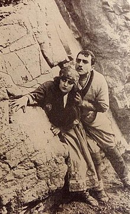
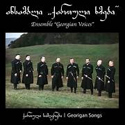
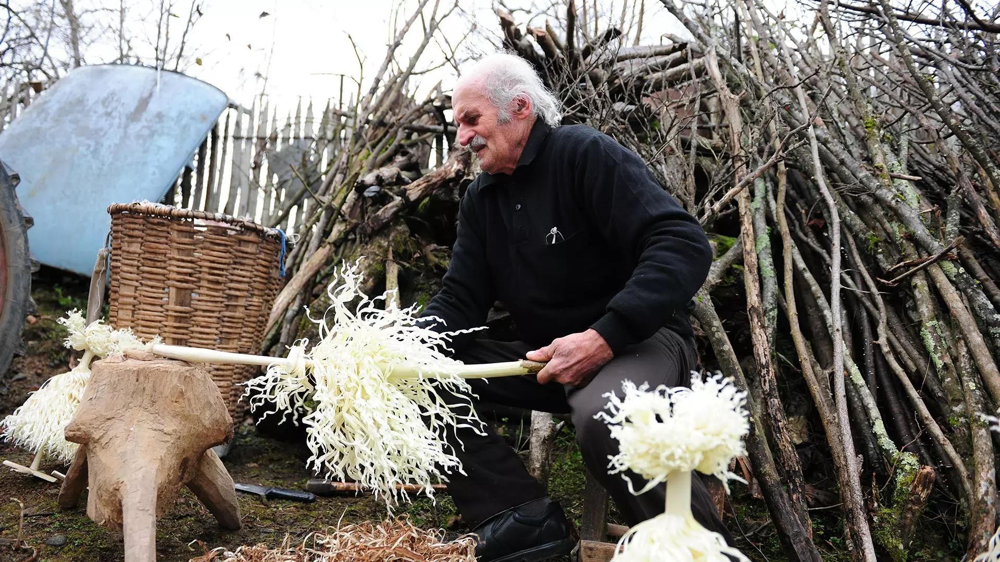
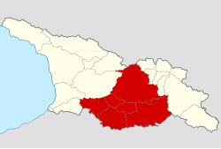

Khachapuri (Georgian: ხაჭაპური), is a filled bread stuffed with melting cheese. It is justifiably considered to be one of Georgia’s most famous national dishes.
In an earlier article we described three of the most popular types and gave a step-by-step guide on how khachapuri dough is made. Find it here.
In this article we will show how to make Acharuli (Georgian: აჭარული ხაჭაპური) from Ajara, in which the dough is formed into an open gondola shape and is topped with a raw egg and butter before serving.

ქართული საბჭოთა კინო
საქართველოს რუსეთის მიერ ოკუპაციის შემდეგ, საბჭოთა ხელისუფლებამ კინოს განსაკუთრებული ყურადღება მიაქცია, როგორც რეკლამისა და პროპაგანდის კარგ საშუალებას. 1921 წლის 11 აპრილს კინოს სექცია გაიხსნა განათლების სახალხო კომისარიატში. ის განთავსდა საჯარო ბიბლიოთეკის შენობის პირველ სართულზე. სექციას გადაეცა „ფილმას“ ქონება და კინოთეატრ „აპოლოს“ უკან მოწყობილი დიღმელოვის ლაბორატორია. 11 ივლისს მოხდა კინოთეატრების ნაციონალიზაციაც. კინოსექციის დირექტორები იყვნენ გერმანე გოგიტიძე და ამო ბეკ-ნაზაროვი. ქართულ კინოწარმოებაში აქტიურად ჩაებნენ რუსეთიდან ჩამოსული რეჟისორები: ივანე პერესტიანი, ამო ბეკ-ნაზაროვი, ვლადიმერ ბარსკი. სასცენარო საქმეებს განაგებდა გრიგოლ რობაქიძე, მან შეადგინა ქართული კლასიკური მწერლობის ეკრანიზაციის გეგმა. სექციის პირველი კინონამუშევარი იყო „ბავშვების გამგზავრენა კოჯორში დასასვენებლად“. პირველი მხატვრული კინოსურათის გადაღება გადაწყდა რევოლუციურ-ისტორიულ თემატიკაზე, კერძოდ არსენა ჯორჯიაშვილზე. ფილმი „არსენა ჯორჯიაშვილი“, რომელიც ივანე პერესტიანმა გადაიღო შალვა დადიანის სცენარით, კომერციულად მომგებიანი აღმოჩნდა. მოგებამ საშუალება მისცა კინოსექციას გაეუმჯობესებინა კინოატელიე, ლაბორატორია და გაეზარდა თანამშრომელთა რიცხვი. მთავარი როლის შემსრულებელ მიხეილ ჭიაურელს კი მაშინდელი ამერიკის და მსოფლიოს კერპს დაგლას ფეირბენქსს ადარებდნენ.[3]პერესტიანმა ქართულ კინოში რევოლუციური თემატიკა შეიტანა. „არსენა ჯორჯიაშვილმა“ ვ. გარდინის ფილმ „ნამგალ და უროსთან“ ერთად საბჭოთა კინემატოგრაფიაში საფუძველი ჩაუყარა ისტორიულ-რევოლუციურ ჟანრს. გერმანე გოგიტიძის დირექტორობის დროს ასევე გადაღებული იქნა ფილმები„სურამის ციხე“ „მოძღვარი“ და „კაცი კაცისთვის მგელია“
1922 წელს თბილისში გაიხსნა პირველი კინოსასწავლებელი, რომელშიც უნდა აღეზარდათ მომავალი კინომსახიობები. 1923 წელს კინოსექცია „სახკინმრეწვად“ ჩამოყალიბდა. ამ გარდაქმნამ ხელი შეუწყო ქართული კინოს ტექნიკური და ფინანსური შესაძლებლობების გაძლიერებას. მის დირექტორად კვლავ გოგიტიძე დარჩა. ივანე პერესტიანის ფილმი „წითელი ეშმაკუნები“ უკანასკნელი ძალიან წარმატებული და პოპულარული აღმოჩნდა და კრიტიკოსების და მაყურებლის დიდი მოწონება დაიმსახურა მთელი საბჭოთა კავშირის მასშტაბით. ეს იყო პირველი საბჭოთა ფილმი, რომელზეც რეცენზია New York Times-ში დაიბეჭდა. 1925 წელს გამოსულ, ივანე პერესტიანის ფილმში „ტარიელ მკლავაძის მკვლელობის საქმე“ პირველად იყო გამოყენებული ე.წ. ფლეშბეკები. მხატვრულ ფილმებთან ერთად სახკინმრეწვი უშვებდა დოკუმენტურ პროდუქციასაც. 1924 წლის მარტში ქართული კინომრეწველობა საბჭოთა კავშირის მასშტაბით მოწინავედ დაასახელეს. 1928 წლისთვის „სახკინმრეწვი“ საბჭოთა კავშირში სიდიდით მესამე კინოფაბრიკა იყო.[4] ქართული კინოს განსაკუთრებული მხარდამჭერი იყო იმ პერიოდის საბჭოთა ხელოვნების იდეოლოგი ანატოლი ლუნაჩარსკი.[5]
1924 წელს სახკინმრეწვში ალექსანდრე წუწუნავა მიიწვიეს. მაყურებელთა მოწონებას იმსახურებდა მისი ფილმები „ვინ არის დამნაშავე?“ (1925 წ.) „ხანუმა“ (1926 წ.) „ჯანყი გურიაში“ (1928 წ.). „ვინ არის დამნაშავე?“ იყო პიესაზე დაფუძნებული პირველი ქართული ფილმი, ხოლო „ხანუმა“ პირველი ქართული კინოკომედია. წუწუნავას ფილმებში მონაწილეობდა პირველი ქართველი კინოვარსკვლავი ნატო ვაჩნაძე. მან პირველი როლი შეასრულა ფილმში „არსენა ყაჩაღი“ (1923). ვაჩნაძე ხიბლავდა აუდიტორიას მიმზიდველობითა და სილამაზით. მისი მონაწილეობა ფილმში იყო გარანტი სტაბილური საკასო შემოსავლებისა.[6]
1924-1929 წლებში ქართულ კინოში მოღვაწეობდა თეატრის რეჟისორი კოტე მარჯანიშვილი. მარჯანიშვილმა პირველმა გადაიღო საბავშვო (გოგი რატიანი“, 1927) და ასევე უცხოურ ლიტერატურულ ნაწარმოებზე დაფუძნებული ფილმები („ამოკი“, 1927). 1920-იან წლებში ქართული კინო გადაიქცა ხელოვნების ჩამოყალიბებულ, დამოუკიდებელ, თვითმყოფად დარგად.[7]მნიშვნელოვანი როლი მიეკუთვნა ქართული ლიტერატურის ეკრანიზაციას. შეიქმნა ფილმები ალექსანდრე ყაზბეგის, ეგნატე ნინოშვილის, გიორგი წერეთლის, დავით კლდიაშვილის და სხვათა ნაწარმოებების მიხედვით. ასეთი ფილმები იყო „სამი სიცოცხლე“ (ი. პერესტიანი, 1925), „სამანიშვილის დედინაცვალი“ (კ. მარჯანიშვილი, 1926). 1923 წლიდან ქვეყნდებოდა პირველი რეცენზიები. 1925 წლიდან გამოიცემოდა რუსულ ენოვანი ჟურნალი „Кино Грузий“, ასევე რეცენზიები ქვეყნდებოდა გაზეთში „საქართველოს განათლების მუშაკი.“ სახკინმრეწვი დიდ ყურადღებას უთმობდა უცხოეთში ქართული ფილმების გატანა-გაყიდვის საკითხს. ამ მიზნით საზღვარგარეთ მიავლინეს გერმანე გოგიტიძე, რომელმაც გააფორმა ხელშეკრულებები პარიზის, ბერლინის, თეირანის კინოთეატრების მფლობელებთან. განსაკუთრებით პოპულარული იყო კინოები ნატო ვაჩნაძის მონაწილეობით. სახკინმრეწვი ამ დროს დოკუმენტურ ფილმებსაც იღებდა. მათ შორის გამორჩეულია 1927 წელს გამოსული სრულმეტრაჟიანი ფილმი „ზაჰესი“, რომელსაც მშენებლობიდან, 1922 წლიდან ნაწილ-ნაწილ იღებდნენ და ამონტაჟებდნენ.
დამოუკიდებლობის შემდეგ
1990-იანი წლები ქართული კინოში სტაგნაციის პერიოდი იყო. უსახსრობის გამო ცალკეულ ფილმებზე მუშაობა წლების განმავლობაში ჭიანურდებოდა. მრავალი კინემატოგრაფისტი საერთოდ ჩამოშორდა შემოქმედებით პროცესს. ამ პერიოდში ფილმების მინიმალური რაოდენობა გადაიღეს. გამონაკლისი იყო 1996 წელს გადაღებული „შეყვარებული კულინარის 1001 რეცეპტი“, რომელიც ერთობლივი ქართულ-ფრანგული პროდუქცია იყო და დიდ საერთაშორისო წარმატებას მიაღწია, მოხვდა რა ოსკარის ნომინანტთა სიაში საუკეთესო უცხოური ფილმის კატეგორიაში. 2013 წელს რეჟისორ ზაზა ურუშაძის მიერ გადაღებული ქართულ-ესტონური პროდუქცია „მანდარინები“ დასახელებული იყო ოქროს გლობუსისა და ოსკარის საუკეთესო უცხოენოვანი ფილმის კატეგორიებში, მოიგო საერთაშორისო პრესის აკადემიის პრესტიჟული ჯილდო, გაიმარჯვა მრავალ საერთაშორისო ფესტივალებზე

ფაზისი (ვაჟთა ვოკალური ანსამბლი)
ფაზისი (ვაჟთა ვოკალური ანსამბლი) — ვაჟთა ვოკალური ანსამბლი, ჩამოყალიბდა 1976 წელს საქართველოს მეცნიერებათა აკადემიასთან. დაარსებიდან 1983 წლამდე ანსამბლს ხელმძღვანელობდა რ. გოგოლაშვილი („ფაზისის“ შექმნაში განსაკუთრებული წვლილი მიუძღვის ენათმეცნიერ ჯ. ღვინჯილიასაც); 1984 წლიდან „ფაზისის“ სამხატვრო ხელმძღვანელია ჯ. ყოლბაია. ანსამბლის ძირითად შემადგენლობასთან ერთად (რ. მდინარაძე, დ. კვინიკაძე, რ. გამყრელიძე, ა. შურღაია, მ. ჩიქვილაძე, ზ. გოგოლაშვილი, ნ. ბარათაშვილი, რ. ჭკადუა) წლების მანძილზე არაერთმა მომღერალმა იღვაწა, რომლებიც შემდგომში წარმატებით გამოდიოდნენ როგორც ხალხურ, ისე კლასიკური ჟანრში, (მათ შორის იყო პოპულარული მომღერალი გოგი დოლიძე). „ფაზისი“ წარმატებით ასრულებს უძველეს ქართულ ხალხურ სიმღერებს და საგალობლებს, აგრეთვე ქართულ კომპოზიტორთა ნაწარმოებებს. ანსამბლის შესრულება ხასიათდება მაღალაი პროფესიული კულტურით, დახვეწილი, ფაქიზი გემოვნებით, ეროვნული კოლორიტის გრძნობით. 1999 წელს ნიდერლანდების ქალაქ როტერდამში გამოვიდა „ფაზისის“ კომპაქტ-დისკი (21 ხალხური სიმღერა და ა. მაჭავარიანის „დოლურა“), ამავე წელს გამოვიდა ქართული საგალობლები „ქრისტე-2000“ ანსაბლის შესრულებით. „ფაზისი“ საგასტროლოდ იყო საზღვარგარეთის მრავალ ქვეყანაში (ავსტრია, იტალია, გერმანია, საფრანგეთი, შვედეთი, შვეიცარია, ნორვეგია, სირია, იორდანია და სხვა).

საქართველოშიც ასე ხდება - 31 დეკემბერს ახალი წლის მოლოდინში უამრავი ადამიანი ხარობს, ირთვება ნაძვისხე, მის ქვეშ საჩუქრები ლაგდება, ბავშვებთან თოვლის პაპა ან სანტა-კლაუსი მოდის, იშლება მდიდრული სუფრა და არის დიდი მხიარულება. თუმცა საქართველოში ძველით ახალ წელსაც აღნიშნავენ. 14 იანვარი, როდესაც საქართველოში ძველით ახალი წელი აღინიშნება, რელიგიურ დატვირთვასაც ატარებს - ეს წმინდა ბასილი დიდის ხსენების დღეა, ამიტომ ამ დღეს ქართველები ბასილობას ან კალანდას უწოდებენ.
„ბასილას წვერი“
ძველით ახალი წლისთვის სახლში აუცილებლად იდგმებოდა ჩიჩილაკი. ის თხილის მსხვილი ხისგან მზადდება და ამ საქმეს კარგი ოსტატი სჭირდება. მან ხის ღეროს ჯერ კანი უნდა გააცალოს, შემდეგ გააცხელოს, რომ დრეკადი გახდეს, ბოლოს კი ქვემოდან ზემოთ ქერქი დანით უნდა აათალოს ისე, რომ ხეზე ბევრი ბურბუშელა გაჩნდეს. ბურბუშელიან ხის ღეროს ქვემოთ სადგარი დაუმაგრდება, ზემოთ კი - ჯვარი და ჩიჩილაკი მზადაა. შემდეგ ის ხილით, ჩურჩხელით, ტკბილეულით ირთვებოდა და კალანდობის ერთ-ერთი მთავარი ატრიბუტი იყო. მას „ბასილას წვერსაც“ ეძახდნენ.
სპეციალურად ამ დღისთვის დიასახლისი ტკბილ ნამცხვარს - „ბასილოპიტას“ აცხობდა და მასში მონეტას მალავდა. მიიჩნეოდა, რომ, ვისაც ეს მონეტა შეხვდებოდა, დამდეგ წელს წმინდა ბასილისგან განსაკუთრებული შეწევნა ექნებოდა. „ბასილოპიტობა“ ახლაც აღინიშნება საქართველოს არაერთ მონასტერში. რაც შეეხება ჩიჩილაკს, საახალწლოდ მას დღესაც თითქმის ყველა ოჯახში შეხვდები.
გურული კალანდა
გურიაში ახალ წელს კალანდას ეძახიან. კალანდის დადგომამდე ოჯახის მამაკაცები ღორის თავს, საახალწლო კვერს, საახალწლო კერძებით სავსე გობს, ჩიჩილაკს და ცარიელ ჩაფს იღებდნენ და მარანში შედიოდნენ. იქ ოჯახის უფროსი გობს ხმაამოუღებლად დადგამდა მიწაზე, ჩაფში ღვინოს პირამდე ჩაასხამდა, დაიჩოქებდა და წმინდა ბასილის ოჯახის ბედნიერებას შესთხოვდა. ამის მერე მეკვლე გობიდან იღებდა კაკალს და წმინდა ბასილის თხოვნით მიმართავდა, ოჯახი ყველა სიკეთით აევსო. შემდეგ კაკალს გატეხდნენ. სავსე კაკალი კარგის მომასწავებელი იყო, ცარიელი - ცუდის და ამ შემთხვევაში მეკვლე რიტუალს იმეორებდა. კალანდისთვის გურიაში ნახევარმთვარის ფორმის ღვეზელი ცხვება ყველითა და მოხარშული კვერცხით. კვერცხი ხვავის, ბარაქის, ოჯახის სიმტკიცისა და გაუტეხლობის სიმბოლოა. იგივე ტრადიცია აქვთ იმერეთშიც.
აჭარული ახალი წელი
სანამ საათი ახალ წელს ჩამოჰკრავდა, აჭარაში სახლის მისაღებ ოთახში ფერადი ბაფთებით მორთული მამალი ცხვარი შეჰყავდათ. ეს ხვავისა და ბარაქის სიმბოლო იყო. ახალი წლის პირველივე წუთებში ოჯახის უფროსი გარეთ გადიოდა და თოფს ისროდა, როგორც სიცოცხლის გაგრძელებისა და სიხარულის სიმბოლოს. ამ დროს ოჯახის დიასახლისი წითელ კაბას იცვამდა და სახლის ყველა ოთახში შაქარში არეულ ბრინჯს აბნევდა, დამდეგ წელს ოჯახს სიტკბო და სიუხვე რომ დაჰბედებოდა. დილით ოჯახის უფროსი ბოსელში ჩადიოდა და რკინის ჯაჭვს გაათრევდა, რომ საქონელიც მრავლად ჰყოლოდათ. დიასახლისი კი ეზოდან სახლში წყლით სავსე დოქს შეიტანდა და ოთახებს მოაპკურებდა.
მეკვლე და მფერხავი
როგორც ახალი, ისე ძველით ახალი წელი წარმოუდგენელი იყო მეკვლის გარეშე. მეკვლე, რომელსაც აჭარაში მფერხავს უწოდებენ, ის ადამიანია, ვისაც მასპინძელი ოჯახი ენდობა და განსაკუთრებული კეთილგანწყობით ეპყრობა. სწორედ ასეთ ადამიანს ირჩევდნენ ახალი წლის პირველ სტუმრად ოჯახში და განსაკუთრებულ დახვედრას უწყობდნენ.
თავის მხრივ, მეკვლეც ხელდამშვენებული მიდიოდა ოჯახში, რომ იქაურებს ხვავი და ბარაქა დაჰბედებოდათ. მეკვლეს ოჯახის უფროსი ტკბილეულით ეგებებოდა კარში და პირს გოზინაყით ჩაუტკბარუნებდა. მიიჩნეოდა, რომ დამდეგ წელს ოჯახის კეთილდღეობა მეკვლის „კარგ ფეხზე“ იყო დამოკიდებული, ამიტომ, დიდ პატივთან ერთად, მეკვლეობა დიდი პასუხისმგებლობაც იყო. მეკვლის ტრადიცია საქართველოში დღემდე შენარჩუნებულია.

სახელწოდება
სახელწოდება მომდინარეობს ქართველთა ლეგენდარული ეთნარქის — ქართლოსისგან (2116 ქრ. წ.[1]). ლეგენდის თანახმად ქართლოსის მამამ თარგამოსმა გაუყო მის ძეებს კავკასია, ქართლოსს ერგო ტერიტორია სპერის ზღვიდან ხუნანამდე. თავად ქართლოსმა აღაშენა ქალაქი და სახელად დაარქვა მისივე სახელი ქართლი, სადაც მისი გარდაცვალების შემდეგ დაკრძალეს. ქართლოსის სახელი — ქართლელი დაერქვა ქართლში მცხოვრებ ქართლოსის მოდგმის ხალხს, ხოლო მოგვიანებით აღნიშნული სახელის ბაზაზე შეიქმნა სახელი საქართველო და შესაბამისად მის მკვიდრთ ქართველები.
ისტორია
ნიკო ბერძენიშვილის აზრით, ქართლის ტომის თავდაპირველი საცხოვრისი ქვემო ქართლი იყო. ძვ.წ. IV-III საუკუნეებში ქართლის ჰეგემონობით ჩამოყალიბდა ქართლის სამეფო, რომელსაც ბერძნულ წყაროებში იბერიის სამეფოდ მოიხსენიებდნენ. მისი დედაქალაქი ჯერ მცხეთა იყო, შემდეგ თბილისი. X საუკუნეში იგი გაერთიანებული ქართული სახელმწიფოს ცენტრი გახდა და გაჩნდა ტერმინი საქართველო. XV-XVIII საუკუნეებში აქ ჩამოყალიბდა ქართლის სამეფო (მოგვიანებით, ქართლ-კახეთის სამეფო), რომელიც 1801 წელს ანექსირებულ იქნა რუსეთის იმპერიის მიერ.
დაყოფა
ქართლი თავისი ბუნებრივ საზღვრებში მოქცეული წარმოადგენდა ტერიტორიას ხუნანიდან სპერის ზღვამდე და იორ-მტკვრის შესართავიდან ლიხის ქედამდე. აღნიშნული ტერიტორია მალევე ოთხ ნაწილად დაიყო: ზემო ქართლი, შიდა ქართლი (ზენას-სოფლისა), კახეთ-კუხეთი და ქვემო ქართლი. როგორც პოლიტიკურ ერთეულში, სხვა ეთნოგრაფიული მხარეები შედიოდა: ხევი, დვალეთი, ცხრაძმისხევი. ეთნიკურ-გეოგრაფიულად ელინისტური ხანიდან მოყოლებული ქართლი ორ ნაწილად იყოფოდა: ზენა სოფელი და ქვენა სოფელი. სავარაუდოდ ამ ერთეულთა შორის მიჯნა მტკვარზე გადიოდა. მოგვიანებით, ისტორიული ქართლი გეოგრაფიული მდებარეობისა და უმთავრესი მდინარის მტკვრის დინების მიხედვით სამ ნაწილად იყო გაყოფილი:
ზემო ქართლი — ისტორიული მხარე, მოიცავდა შემდეგ რეგიონებს: მტკვრის ზედა დინებას, ტაშისკარიდან დაწყებული მის სათავეებამდე (კოლა, არტაანი, ერუშეთი, თმოგვი, სამცხე, ჯავახეთი და თორი), ასევე ჭოროხის აუზს სრულად (ტაო-კლარჯეთი) და შავი ზღვისპირეთს ჭანეთსა და გურიას. გეოგრაფიულად სრულად აერთიანებდა, ეთნარქების — ოძრხოსისა და ჯავახოსის მიწებს. ტერმინი შეესაბამება გვიანდელი ხანის „მესხეთს“. ზემო ქართლი რომ შავი ზღვისპირამდე ვრცელდებოდა ეს ჩანს, როგორც ქართლის („ხუნანიდან სპერის ზღვამდე“), ისე ოძრხოსის წილის („ტასისკარითგან ვიდრე სპერის ზღუამდე“) და თავად კლარჯეთის („არსიანიდან ზღვამდე“) აღწერიდან. მიუხედავად ამ ყველაფრისა ვახუშტი ბატონიშვილისთვის კლარჯეთი ეს იყო ქართლისაგან დამოუკიდებელი წარმონაქმნი და მასში აერთიანებდა ჭანეთს, ისპირსა და თორთუმს. შესაბამისად მისთვის ქართლი ზღვამდე ასოცირდებოდა, მხოლოდ გურიის შავი ზღვის სანაპიროსთან.
შიდა ქართლი — ისტორიული მხარე მტკვრის შუა დინებაზე, თავდაპირველად ცენტრით უფლისციხე დღესდღეობით ცენტრით ქალაქ გორით. თავდაპირველად აერთიანებდა მტკვრის შუაწელის ტერიტორიებს ტაშისკარიდან თბილისის ჩათვლით. გეოგრაფიულად სრულად მოიცავდა, ეთნარქი — უფლოსის მიწას. მხარის ჩრდილოეთ ნაწილში საბჭოთა ხელისუფლების წლებში შეიქმნა სამხრეთ ოსეთის ავტონომიური ოლქი.
ქვემო ქართლი — ისტორიული მხარე მტკვრის ქვემო დინებაზე. თავდაპირველად იგი მოიცავდა თრიალეთის ქედის სამხრეთი მდინარეების (ხრამი და ალგეთი) აუზის ტერიტორიებს. შემოფარგლული იყო ერთის მხრივ მდინარე მტკვრით, მეორეს მხრივ თრიალეთის ქედით, მესამეს მხრივ აბოცის მთებით და მეოთხეს მხრივ დებედა-არაქსის წყალგამყოფი ზოლით. გეოგრაფიულად სრულად აერთიანებდა ეთნარქები — გარდაბოსისა და გაჩიოსის ტერიტორიებს. მოგვიანებით გარდაბნის ტერიტორიას დაემატა მტკვრის მარცხენა სანაპიროც ქალაქ რუსთავის ჩათვლით.
ვახუშტი ბატონიშვილი ქვემო ქართლის საზღვრის ერთ ნაწილს ასე აღწერს:
ვიკიციტატა
„ხოლო აწ, ვინათგან საზღვარი ქართლისა ბერდუჯის მდინარე არს, ვიყოთ მუნითგან წერად: რამეთუ მდინარე ესე ბერდუჯი გამოსდის მთასა აბოცისასა და დის აღმოსავლით ჭოჭკანამდე, მერმე მოიქცევის და დის ჩრდილოთ კერძ, და მიერთვის ქციის მდინარეს...სომხითისა, ერევნისა და ამისი გამყოფელი არს მთა დიდი, მაღალი და მარადის თოვლიანი, კალთათა ტყიანი, ნადირიანი, რომელი წარივლის დასავლით არტანადმდე, ხოლო აღმოსავლით რანსა და გელაქუნს შუა განვლის, და ვიდრე რახსადმდე მივალს, მთისა ამის სამხრით კერძი სომხით-ერევნისა არს, ხოლო ჩრდილოთ კერძი ბერდუჯისა და რანისა, არამედ ბერდუჯის მდინარის აღმოსავლეთი კიდე უპყრავთ ბორჩალუთა და დასავლის კიდის კერძი კი უპყრავს მეფესა ქართლისასა, ვიდრე ხუნანამდე[2].“
დღევანდელი ადმინისტრაციულ-პოლიტიკური დაყოფით ისტორიული ქართლის ტერიტორია შედის შიდა ქართლის, ქვემო ქართლის, მცხეთა-მთიანეთის და სამცხე-ჯავახეთის მხარეებში.
ეკონომიკა
ქართლი დაწინაურებული მიწათმოქმედების ქვეყანა იყო. მიწათმოქმედების დაწინაურება დაკავშირებული იყო სარწყავ სისტემასთან. განვითარებული იყო მემინდვრეობა, მევენახეობა, მეხილეობა, მებოსტნეობა. მიწათმოქმედებასთან ერთად სიმბიოზურად განვითარებული იყო მესაქონლეობა. ქართლში იყო გავრცელებული სახვნელი იარაღის რთული კონსტრუქციული სახეობა დიდი ქართული გუთანი, რომელშიც 9-10 უღელ ხარ-კამეჩს აბამდნენ. ქართლი დღესაც განთქმულია ხილის სხვადასხვა უნიკალური ჯიშით. ქართლის სხვადასხვა კუთხეში გამოყვანილი იყო მხოლოდ ამ რეგიონისთვის დამახასიათებელი ვაზის ჯიშები, მაგ. ატენური.
ქართლში იყო გავრცელებული ქართული ხალხური არქიტექტურის ნიმუში დარბაზული სახლი გვირგვინისებური გადახურვით. ქართლშია შემორჩენილი უძველესი ქართული ქრისტიანული ტაძარი ბოლნისის სიონი (V ს.).
დემოგრაფია
ძველი ქართლის მოსახლეობის უმნიშვნელო რაოდენობამ მოაღწია ჩვენამდე. ქართლში ინტენსიურად ხდებოდა მოსახლეობის მოძრაობა. მოსახლეობის რაოდენობის შევსება ხდებოდა მთებიდან ან იმერეთიდან ჩამოსახლებული ადამიანებით. XVII საუკუნიდან იწყება ოსების ჩამოსახლება შიდა ქართლში. XIX-XX საუკუნეების მიჯნაზე ქართლში შემორჩენილი იყო დიდი ოჯახები. ჩვეულებრივ, ქართლში ოჯახში სულთა რაოდენობა 20-დან 30-მდე მერყეობდა. დღეს ქართლში გვარ-სახელები ძირითადად -შვილი სუფიქსით ბოლოვდება, მაგრამ ირკვევა, რომ ადრე მათ -ძე სუფიქსი ერთვოდა, მაგ. სოფელ დიღომში მცხოვრები თეთრაშვილები, მძევაშვილები და სონღულაშვილები XIV-XVIII საუკუნეების საისტორიო საბუთებში თეთრაძედ, მძევაძედ და სონღულიძედ არიან ჩაწერილები.
უფლის ციხე
უფლისციხე — კლდეში ნაკვეთი ქალაქი, კავკასიის ერთ-ერთი უძველესი დასახლება და საქალაქო ცენტრი. მდებარეობს ქ. გორის აღმოსავლეთით მე-10 კმ-ზე, მდინარე მტკვრის მარცხენა ნაპირას. 2006 წლის 7 ნოემბერს, საქართველოს პრეზიდენტის ბრძანებულების თანახმად მიენიჭა ეროვნული მნიშვნელობის კულტურის უძრავი ძეგლის კატეგორია[1].
წერილობით წყაროებში პირველად VII საუკუნეში იხსენიება. უფლისციხესა და მის შემოგარენში დაცულია არქეოლოგიურ და ხუროთმოძღვრულ ძეგლთა ჯგუფი, რომელთაგან უძველესი ადრინდელი ბრინჯაოს ხანისაა და მტკვარ-არაქსის კულტურის წრეს განეკუთვნება (ნამოსახლარები ლაშეთხევში, გუდაბერტყაზე, გორთან). შუა ბრინჯაოს ხანის მიწურულისაა ყათლანიხევის გორასამოსახლოს ქვედა ფენა.
ძეგლის აღწერა
გვიანდელი ბრინჯაოს ადრეულ საფეხურზე უნდა იყოს ათვისებული ქვიშაქვების მასივი. ძველი წელთაღრიცხვით I ათასწლეულის I ნახევრიდან იქმნებოდა უფლისციხის ხუროთმოძღვრული კომპლექსი, რომლის ძირითადი ნაწილი უმთავრესად გამოკვეთილია ადრინდელ ანტიკურ (ძველი წელთაღრიცხვით VI-IV საუკუნეები) ხანაში. გვხვდება შუა საუკუნის კლდეში ნაკვეთი კომპლექსი. შედარებით უკეთაა დაცული შიდა ქალაქი (ფართობი 4 ჰა), რომელიც მთელი ძეგლის კომპოზიციურ ცენტრს წარმოადგენს. შიდა ქალაქი დასავლეთი და სამხრეთი მხრიდან ბუნებრივადაა დაცული. აღმოსავლეთი და ჩრდილოეთი მხრიდან კი იცავდა კლდეში გაჭრილი დიდი თხრილი, რომელსაც შიდა მხარეს ოთხკუთხაკოშკებიანი განიერი კედელი მიუყვებოდა (შემორჩენილია კლდეში ნაკვეთი ფოსოები).
საფორტიფიკაციო კედლების ქვედა ნაწილი ნაგები ყოფილა კიდეებშემოთლილი (რუსტებიანი) ქვათლილებით, ხოლო ზედა — ალიზის აგურით. სამხრეთ მხარეს მდინარე მტკვარზე ეშვებოდა კლდეში გაჭრილი დიდი გვირაბი. იქვე, სამხრეთ უბანში, გაკეთებული იყო შიდა ქალაქის მთავარი შესასვლელები, მ.შ. მცირე კლდეკარი. შიდა ქალაქი დასერილია კლდეში ნაკვეთი ქუჩების ქსელით, მათგან ერთი მაგისტრალურია, ხოლო დანარჩენი — გვერდითი. გამოქვაბულები განლაგებულია ცალკე ჯგუფებად, ზოგი ერთმანეთთან დაკავშირებულია ფართო გასასვლელებით. ქალაქის ზემო ნაწილში განლაგებული დარბაზების კომპლექსიდან აღსანიშნავია კლდეში ნაკვეთი დიდი დარბაზი, რომლის ნახევარწრიული კამარა დამუშავებულია კლდეშივე ნაკვეთი რვაკუთხა კესონებით.
დაგეგმარება
დაგეგმარების მხრივ აღსანიშნავია დაახლოებით ერთი სქემით განლაგებული კომპლექსები: ეზო, წინიდან პორტალის მსგავსი ღია სადგომი, სიღრმეში კი სიგრძივი (თუ ერთი ან ორი ოთახია) ან სიგრძივი და განივი ღერძების მიხედვით (თუ ოთახთა რაოდენობა მეტია) დაჯგუფებული ოთახები. ეს კომპლექსები თავისი სტრუქტურებით ვანის სამეფოში გავრცელებულ გამოქვაბულებს ენათესავება. უფლისციხის გამოქვაბულთა ერთი ნაწილი შუა საუკუნეებს განეკუთვნება. ზოგი დარბაზის ბრტყელი გადახურვა კოჭებიანი ჭერის მსგავსად არის დამუშავებული და ქართული ხალხური არქიტექტურაში ცნობილ კონსტრუქციებს უნდა ასახავდეს. უფლისციხის ნაქალაქარის ტერიტორიაზე აღმართულია აგურით ნაგები სამეკლესიიანი ბაზილიკა, რომელიც სტილისტიკური ნიშნებით IX-X საუკუნეებს მიეკუთვნება. იგი თითქმის თავდაპირველი სახით არის შემონახული. შუა ნავი გვერდით ნავებზე მაღალია. სამივე ნავი დასაველთით გაერთიანებულია ნართექსით, გადახურულია კრამიტით. მთავარი შესასვლელია სამხრეთიდან. ნართექსს დამოუკიდებელი კარი აქვს და მთავარ ნავს დასავლეთიდან უკავშირდება. სასიმაგრო თხრილის გარეთ გაშლილი ყოფილა გარე ქალაქი, რომელიც ძლიერ დაზიანებულია. შიდა ქალაქის ჩრდილოეთით 700-800 მ-ზე დაცულია უფლისციხის დიდი კლდეკარი, რომელიც ძველ ამიერკავკასიის ძირითადი სავაჭრო მაგისტრალის ერთ-ერთ უდიდეს საგზაო ნაგებობას წარმოადგენდა (სიგრძე - 150 მ, სიმაღლე 10 მ, სიგანე - 2 მ).
უფლისციხის დასავლეთით, მდინარე მტკვრის მარცხენა ნაპირის გაყოლებით, დაცულია გვიანდელი ბრინჯაოსა და ადრინდელი რკინის ხანის წარმართული სალოცავის ნანგრევები ყათლანიხევის ბიცვზე, ამავე დროის სამაროვანი სოფ. უფლისციხეში, ანტიკური ხანის რამდენიმე დაბა და სამაროვნები, შუა საუკუნის ნასოფლარები, სამაროვნები და სახიზნები, ხოლო შიდა ქალაქის აღმოსავლეთით — შუა საუკუნეების კლდეში ნაკვეთი საწნახლები და გზის ნაწილი. უფლისციხესა და სასოფლო გარეუბნის მეურნეობაზე გარკვეულ წარმოდგენას ფვაძლევს არქეოლ. გათხრებით გამოვლენილი აგრარული კულტების სალოცავი, კლდეში ნაკვეთი საწნახლები, მარნები, ვაზის სასხლავი დანები, ბრინჯაოსა და კაჟის ნამგლები, რკინის სახნისი, კევრები, ყურძნის წიპწები და ა.შ. ხელოსნური ნაწარმის სიმრავლე, მრავალფეროვნება და მხატვრული სინატიფე უფლისციხეს ძველი დროის ხელოსნური წარმოების მნიშვნელოვან ცენტრად წარმოგვიდგენს.
.jfif)
.jfif)